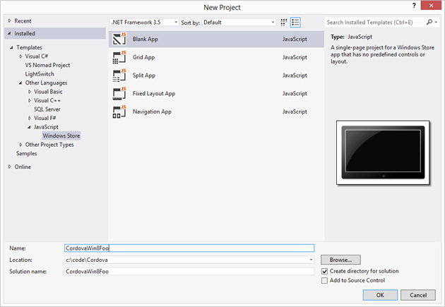

Anleitung zur Windows 8 Platform
Diese Anleitung zeigt Ihre Entwicklungsumgebung SDK einrichten, Cordova apps für Windows 8 bereitstellen. Finden Sie im folgenden detaillierte Plattform-spezifischen Informationen:
Die Befehlszeilentools, die oben beziehen sich auf Versionen vor 3.0 Cordova. Informationen über die aktuelle Schnittstelle finden Sie unter The Command-Line Interface.
Microsoft als veraltet markiert den Namen Metro-Style apps in Windows 8 und Windows RT. MSDN bezieht sich jetzt auf diese app als ein Windows-Speicher -app, und dieser Anleitung folgt dieser Konvention. Darüber hinaus bedeutet in diesem Handbuch Windows 8 Windows 8 und Windows RT.
1. Anforderungen
Windows 8
Visual Studio 2012 Professional oder besser oder Visual Studio 2012 Express für Windows 8
Folgen Sie den Anweisungen hier , um Ihre apps Windows Store einreichen.
2. Installieren Sie SDK + Cordova
Richten Sie Ihre bevorzugte Variante der Visual Studio-2012. Alle das Produkt bezahlten Versionen (Professional, usw.) können Sie Windows Store apps zu bauen. Sie benötigen Express für Windows 8 baut Windows Store apps mit der Express-Editionen.
Herunterladen Sie und extrahieren Sie die neueste Kopie von Cordova. Arbeiten Sie der
lib\windows-8Unterverzeichnis.
3. Einrichten des neuen Projekts
Sie können bereits mit der HTML/JavaScript verfolgen in Windows Store apps verfügbaren Windows 8-apps erstellen. Verwenden Sie Cordova in Windows Store apps derselben APIs wie auf anderen Cordova-unterstützte Plattformen verfügbar zu machen.
Öffnen Sie Visual Studio 2012 und wählen Sie Neues Projekt.
Wählen Sie Installierte → → andere Sprachen → JavaScript → Windows Vorlagenspeicher vom Baum und dann Leere App aus der Projektliste. Geben Sie was auch immer du, wie z. B. magst Projektname
CordovaWin8Foowie in diesem Beispiel.
Microsoft weiterhin verwenden Sie
default.htmlals die Standard-Homepage, aber die meisten Web-Entwickler verwendenindex.html. (Außerdem ist es wahrscheinlich, dass in anderen Varianten Ihres Projekts Plattform Sie verwendenindex.htmlals Namen für Ihre Standard-Seite.) Dieses, im Projektmappen-Explorer umbenennen Regeln diedefault.htmlDatei zuindex.html. Doppelklicken Sie auf diepackage.appxmanifestDatei und ändern Sie den Wert Start Page zuindex.html.Gehören
cordova.jsin Ihrem Projekt, der rechten Maustaste auf dasjsVerzeichnis im Projektmappen-Explorer und wählen Sie → Neues Element hinzufügen. Suchen Sie diecordova.jsDatei daslib\windows-8Verzeichnis oben erwähnt.Bearbeiten Sie den Code für
index.html. Fügen Sie einen Verweis aufcordova.js. Sie können dies tun, manuell oder durch Ziehen der Datei im Projektmappen-Explorer.
Hinzufügen des Verweises...
<!-- WinJS references -->
<link href="//Microsoft.WinJS.1.0/css/ui-dark.css" rel="stylesheet" />
<script src="//Microsoft.WinJS.1.0/js/base.js"></script>
<script src="//Microsoft.WinJS.1.0/js/ui.js"></script>
<!-- Cordova -->
<script src="/js/cordova.js"></script>
<!-- CordovaWin8Foo references -->
<link href="/css/default.css" rel="stylesheet" />
<script src="/js/default.js"></script>
- Als Nächstes fügen Sie Code, der die Cordova veranschaulicht arbeitet.
Einen 'Deviceready'-Handler hinzufügen...
<body>
<p>Content goes here</p>
<script type="text/javascript">
console.log("Subscribing...");
document.addEventListener("deviceready", function () {
navigator.notification.alert("The device is ready!");
});
</script>
</body>
5. Testen Sie das Projekt
Führen Sie das Projekt von Visual Studio. Sie werden sehen, dass das Meldungsfeld angezeigt werden:

Fertig!
Das ist es! Du bist jetzt bereit, Windows Store apps mit Cordova zu bauen.